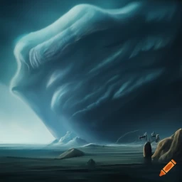
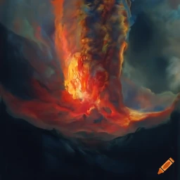
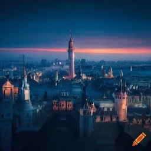

1 / 3

Roshar is a planet known for huge storms and a diverse ecosystem that has evoleved to survive them. The Stormlight Archives take place there.
2 / 3

Scadrial is known for having large ashmounts that constantly erupt and pour ash upon the world. It is also one of the most technilogically advanced systems.
3 / 3

The system of Sel is known for its city Elantris. Once a beacon of light and learning, Elantris fell in the Raod and had to be renowed by the hero Raoden.
❮
❯